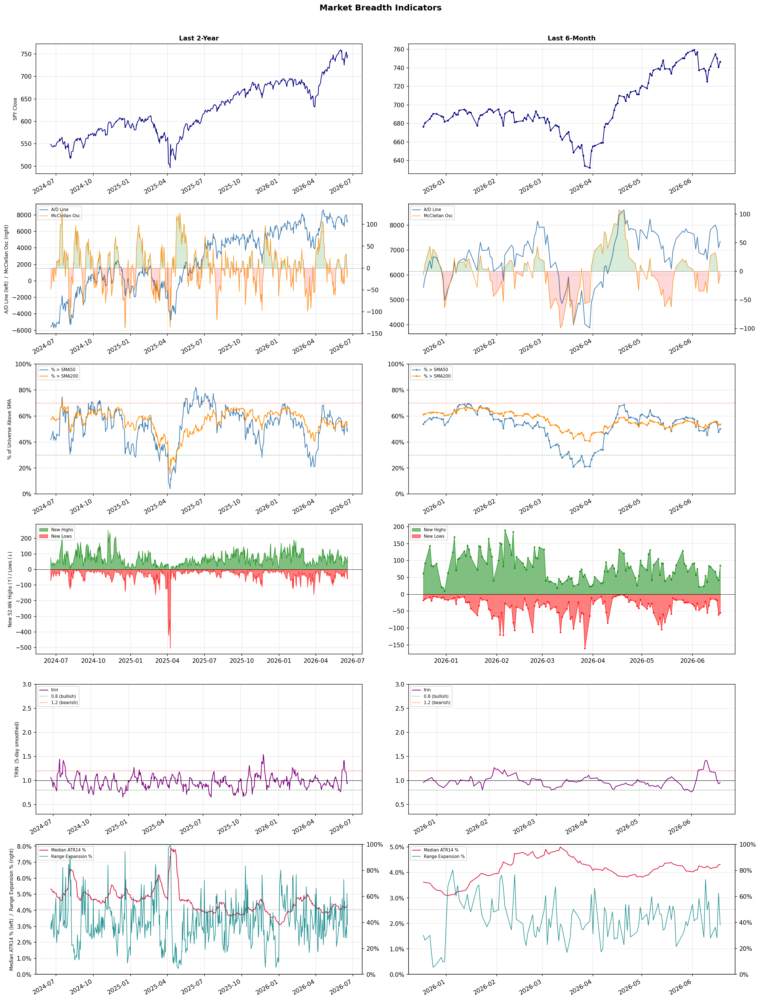

A daily market breadth and sector rotation report for active investors
| Item | Read |
|---|---|
| Regime | Selective Risk-On |
| Risk posture | Selective |
| Universe | 1,344 stocks tracked · 85 new 52-week highs · 30 active swing setups |
| Breadth | 50.2% of tracked stocks are above SMA50 — neutral range, new highs exceed new lows (85 vs 55), McClellan oscillator (breadth momentum) is negative at -6.4 |
| Leadership | Electronic Components, Computer Hardware, and Semiconductor Equipment & Materials |
| Weakest groups | Financial Data & Stock Exchanges, Oil & Gas E&P, and Agricultural Inputs |
Use this report to prioritize research and chart review; validate entries, stops, liquidity, earnings, and risk before acting.
| Item | Read |
|---|---|
| Primary read | Selective Risk-On regime with Selective risk posture. |
| Research queue | OUST, FLEX, TTMI, RAL, APH |
| Leadership focus | Electronic Components, Computer Hardware, and Semiconductor Equipment & Materials |
| Caution list | Financial Data & Stock Exchanges, Oil & Gas E&P, and Agricultural Inputs |
| Review prompt | Check extension risk, chart location, fundamentals, valuation, and earnings before using any research row. |
| Item | Read |
|---|---|
| Primary read | 2 active risk warnings; use screen output as watchlist input only. |
| Bullish screens | WDC, ACMR, AMAT, ASML, ARM |
| Bearish screens | none |
| Alerts / levels | Automated trigger, stop, ATR, liquidity, reward/risk, and event-risk levels are pending future enrichment. |
| Review prompt | Open the linked chart, define trigger and invalidation, then check liquidity and event risk independently. |
Risk Posture: Selective — screen backdrop supports selective research in leading industries
Metric context: McClellan below -50 = elevated selling pressure; below -100 = washout territory. Range Expansion = share of stocks with daily range above their 20-day average. Signal Density = share of tracked names appearing in signal screens.
| Breadth Date | % > SMA50 | % > SMA200 | New Highs | New Lows | McClellan | Median Range | Avg Range | Median ATR14 | Range Expansion | Signal Density |
|---|---|---|---|---|---|---|---|---|---|---|
| 2026-06-18 | 50.2% | 53.6% | 85 | 55 | -6.4 | 3.6% | 4.2% | 4.3% | 38.1% | 6.6% |

Prior comparison date: June 17, 2026
| Metric | Prior | Current | Change |
|---|---|---|---|
| Regime | Neutral | Selective Risk-On | changed |
| Risk Posture | Cautious | Selective | changed |
| % > SMA50 | 47.8% | 50.2% | +2.4 pts |
| % > SMA200 | 53.2% | 53.6% | +0.4 pts |
| New Highs | 42 | 85 | +43 |
| New Lows | 60 | 55 | +5 |
Top-10 industries entering: Rental & Leasing Services. Top-10 industries leaving: Banks - Diversified. New multi-signal long setups: ACMR, AMAT, ARM, ASML, AVR, CALY, CORZ, CRDO, ESI, HYLN. New multi-signal short setups: none.
| Status | Tickers | Read |
|---|---|---|
| Added | ACMR, AMAT, ARM, ASML, AVR, CALY, CORZ, CRDO | New technical screen matches vs prior report. |
| Removed | BEN, ENPH, GS, HWM, IONQ, JBLU, JPM, MAT | No longer present in today's technical screen matches. |
| Still Active | BFLY, BNS, BTSG, CIFR, EMR, GE, MRNA, NBIS | Appeared in both current and prior reports. |
| Promoted | none | Model Screen Score improved by at least 15 points. |
| Downgraded | none | Model Screen Score declined by at least 15 points. |
| Direction | Industry | ETF | Prior Rank | Current Rank | Days | Rank Change |
|---|---|---|---|---|---|---|
| Rose | Building Products & Equipment | XHB | 94 | 18 | 28 | +76 |
| Rose | Footwear & Accessories | N/A | 86 | 19 | 35 | +67 |
| Rose | Packaging & Containers | N/A | 95 | 30 | 42 | +65 |
| Rose | Copper | COPX | 81 | 17 | 42 | +64 |
| Rose | Advertising Agencies | N/A | 79 | 15 | 35 | +64 |
Bull: The Building Products & Equipment sector is experiencing a rise in relative strength, primarily driven by a recovering housing market, as suggested by headlines like "Is Lennar Finally Turning the Corner After Its Housing Slump?" and "How Is PulteGroup’s Stock Performance Compared to Other Homebuilder Stocks?" This recovery is likely bolstered by a favorable interest rate environment, despite concerns over potential mortgage rate spikes, which could stimulate demand for home construction and renovation, further benefiting companies in this sector, as indicated by the sector-wide rally exemplified by Trex Company's 7.1% jump.
Bear: While the relative strength of the Building Products & Equipment sector may suggest a recovery, the underlying economic conditions remain precarious, particularly with the Federal Reserve's unpredictable monetary policy and potential for mortgage rate spikes. The headlines about homebuilders like Lennar and PulteGroup may reflect short-term optimism, but they do not account for the broader risks of affordability issues and a potential slowdown in housing demand, which could severely impact the sector's growth trajectory. Additionally, the recent rally in stocks like Trex Company may be more indicative of speculative trading rather than sustainable fundamentals, raising concerns about the durability of this upward trend.
Verdict: The Building Products & Equipment sector's rise is fundamentally driven by a recovering housing market, supported by lower interest rates that encourage home construction and renovation. However, the key risk lies in the Federal Reserve's unpredictable monetary policy, which could lead to sudden mortgage rate spikes, potentially dampening demand and undermining the sector's growth momentum. Investors should closely monitor interest rate trends and affordability issues to gauge the sustainability of this upward movement.
Sources: Yahoo Finance, Google News
Bull: The Footwear & Accessories industry is experiencing a rise in relative strength due to favorable industry trends highlighted in recent analyses, such as the potential for growth in stocks like NIKE and Birkenstock, which are positioned to capitalize on increasing consumer demand for innovative and stylish footwear. Additionally, the positive sentiment around retail apparel stocks suggests a broader resurgence in consumer spending, driven by a recovering economy and shifting fashion preferences, which are likely to enhance profitability and market performance in the sector.
Bear: While the Footwear & Accessories industry may show rising relative strength, this could be misleading as it often reflects short-term market sentiment rather than sustainable growth. Key headwinds such as rising inflation, supply chain disruptions, and shifting consumer priorities towards value over brand loyalty could undermine profitability for major players like NIKE and Birkenstock. Additionally, the overall economic recovery remains uncertain, and any downturn could disproportionately impact discretionary spending on non-essential items like footwear and accessories.
Verdict: The Footwear & Accessories industry's rise can be attributed to a combination of recovering consumer spending and a shift towards innovative and stylish products, positioning brands like NIKE and Birkenstock for growth. However, investors should remain cautious of the key risks highlighted in the bear thesis, including rising inflation and supply chain disruptions, which could dampen profitability and consumer spending on discretionary items if economic conditions falter.
Sources: Google News
Bull: The Packaging & Containers sector is experiencing a relative strength rise primarily due to a sector-wide rally, as evidenced by Silgan Holdings' 5.1% jump, indicating investor confidence amidst broader market challenges. Despite facing headwinds from rising energy costs linked to the Iran war, the resilience of specific stocks and the potential for recovery in demand for packaging solutions suggest that the sector is positioned to rebound, particularly as companies adapt to changing market conditions and consumer preferences.
Bear: While the recent rally in the Packaging & Containers sector, exemplified by Silgan Holdings' 5.1% jump, may suggest investor confidence, it is crucial to recognize that this uptick is likely a short-term reaction rather than a sustainable trend. The ongoing Iran war is driving significant volatility in energy costs, which directly impacts production expenses and margins for packaging companies, potentially leading to a prolonged period of financial strain. Furthermore, any recovery in demand for packaging solutions could be hampered by broader economic uncertainties and shifting consumer behaviors, making the sector's outlook more precarious than optimistic.
Verdict: The Packaging & Containers sector's recent rise, highlighted by Silgan Holdings' 5.1% increase, reflects a temporary boost in investor sentiment amid broader market challenges, driven by expectations of recovery in demand and adaptability to changing consumer preferences. However, the key risk lies in the ongoing volatility in energy costs due to the Iran war, which could significantly impact production expenses and margins, potentially undermining the sector's short-term gains and leading to a more cautious outlook. Investors should closely monitor energy price trends and broader economic indicators to assess the sustainability of this rally.
Sources: Google News
Bull: Copper is experiencing rising relative strength primarily due to its critical role in the transition to renewable energy and the ongoing AI boom, as highlighted by the headlines discussing the grid resilience boom and the comparison of copper with gold and silver in this context. Additionally, the robust performance of copper-related ETFs, such as the one that returned 156% and offers a 9.7% yield, reflects strong investor sentiment and confidence in copper's demand driven by industrial applications and infrastructure investments. This bullish outlook is further supported by the increasing trading volumes in copper-clad laminate stocks, indicating heightened market activity and interest in copper-related sectors.
Bear: While the rising relative strength of copper may seem promising, it is crucial to consider potential headwinds such as a slowdown in global manufacturing, which could significantly dampen demand for copper. Additionally, the high returns of copper ETFs may be a result of speculative trading rather than sustainable fundamentals, and the focus on renewable energy and AI may not translate into immediate, consistent demand for copper, especially if economic conditions worsen or alternative materials gain traction.
Verdict: Copper's rising strength is fundamentally driven by its essential role in the transition to renewable energy and the burgeoning AI sector, which are expected to boost demand for copper in infrastructure and technology applications. However, investors should remain cautious of potential headwinds, particularly a slowdown in global manufacturing that could dampen demand and undermine the current bullish sentiment. It is advisable to monitor economic indicators closely and consider diversifying investments to mitigate risks associated with speculative trading in copper ETFs.
Sources: Yahoo Finance, Google News
Bull: The Advertising Agencies sector is experiencing a rise in relative strength primarily due to its strategic adaptation to AI technologies, as highlighted by Bloomberg's assertion that ad agencies are turning AI disruption to their advantage. This shift is further supported by Morningstar's identification of top AI stocks, indicating a broader market recognition of the potential for innovation within the industry. Additionally, the positive earnings highlights from MediaAlpha suggest that companies in this sector are effectively leveraging new technologies to enhance performance, positioning them favorably against other industries.
Bear: While the bullish narrative emphasizes the strategic adaptation to AI technologies, it overlooks the fundamental risks associated with over-reliance on these innovations, which may lead to increased competition and margin compression as agencies rush to adopt similar tools. Furthermore, the recent earnings highlights from MediaAlpha may not be indicative of the entire sector's health, as they could reflect a temporary boost rather than sustainable growth, especially given the broader economic uncertainties and potential shifts in advertising spending. Lastly, the performance of individual stocks like Omnicom Group suggests that not all players are benefiting equally, raising concerns about the overall resilience of the sector amid these changes.
Verdict: The advertising agencies sector is rising due to its strategic embrace of AI technologies, which enhance operational efficiency and drive innovation, as evidenced by positive earnings from key players like MediaAlpha. However, the bear case highlights a critical risk: an over-reliance on these technologies could lead to intensified competition and margin compression, potentially undermining long-term sustainability. Investors should monitor individual agency performance closely and assess their adaptability to changing market dynamics to identify resilient players.
Sources: Google News
| Direction | Industry | ETF | Prior Rank | Current Rank | Days | Rank Change |
|---|---|---|---|---|---|---|
| Fell | Oil & Gas Equipment & Services | XES | 6 | 76 | 35 | -70 |
| Fell | Oil & Gas Refining & Marketing | CRAK | 15 | 84 | 42 | -69 |
| Fell | Chemicals | N/A | 23 | 82 | 35 | -59 |
| Fell | Oil & Gas Integrated | XLE | 22 | 79 | 28 | -57 |
| Fell | REIT - Healthcare Facilities | XLRE | 16 | 72 | 28 | -56 |
Bear: While the bull analyst points to external factors like fluctuating oil prices and geopolitical instability, the fundamental issues facing the Oil & Gas Equipment & Services sector are more deeply rooted. The industry's heavy reliance on cyclical demand, combined with increasing regulatory pressures and a global shift towards renewable energy, raises significant concerns about the long-term viability of traditional oil and gas investments. Furthermore, the falling relative strength trend of the XES ETF indicates that even as oil prices may experience short-term surges, the broader market sentiment is shifting away from fossil fuels, potentially limiting recovery and growth prospects for companies within this sector.
Bull: The Oil & Gas Equipment & Services sector, as represented by the SPDR S&P Oil & Gas Equipment & Services ETF (XES), is likely experiencing a decline in relative strength due to broader market concerns over fluctuating oil prices and potential geopolitical instability affecting supply chains. Recent headlines indicate a focus on alternative investment opportunities that capitalize on oil price surges without direct exposure, suggesting investor caution and a shift in sentiment away from traditional oil and gas equities. Additionally, the mention of specific companies like Halliburton and TechnipFMC in Zacks Industry Outlook highlights the competitive pressures and market volatility impacting the sector's performance.
Verdict: The Oil & Gas Equipment & Services sector is likely experiencing a decline due to its heavy reliance on cyclical demand and increasing regulatory pressures, compounded by a broader market shift towards renewable energy sources. This trend, coupled with geopolitical uncertainties and fluctuating oil prices, raises significant concerns about the long-term viability of investments in traditional oil and gas, posing a key risk for investors. As such, a cautious approach may be warranted, prioritizing companies with strong adaptability to changing energy landscapes.
Sources: Yahoo Finance, Google News
Bear: While the bull analyst attributes the sector's relative weakness to demand concerns and geopolitical stability, a more critical view reveals that the recent highs in the CRAK ETF may be misleading, driven by short-term market speculation rather than sustainable fundamentals. The underlying issues of overcapacity in refining, potential regulatory pressures, and the long-term shift towards renewable energy sources pose significant headwinds that could undermine profitability, especially if global economic conditions deteriorate and demand for refined products continues to wane.
Bull: The relative weakness in the Oil & Gas Refining & Marketing sector, as indicated by the falling trend, can primarily be attributed to concerns over demand, as highlighted in the headline about "Oil to Slip on Demand Woes." Additionally, the market's focus on geopolitical stability, particularly the hopes for Middle East de-escalation, may have tempered investor enthusiasm, causing a shift in sentiment away from refiners despite recent positive performance indicators, such as the Oil Refiners ETF (CRAK) hitting a new 52-week high.
Verdict: The recent decline in the Oil & Gas Refining & Marketing sector can be fundamentally attributed to weakening demand concerns and the potential for overcapacity, which are exacerbated by a long-term shift towards renewable energy sources. The key risk highlighted by the bear case is that the recent highs in the CRAK ETF may not reflect sustainable fundamentals, suggesting that investors should approach the sector with caution, particularly in light of potential regulatory pressures and a deteriorating global economic outlook.
Sources: Yahoo Finance, Google News
Bear: While the bull analyst points to macroeconomic pressures and competitive dynamics as primary factors behind the chemicals sector's decline, it is crucial to recognize that the sector is also grappling with structural challenges such as increasing regulatory scrutiny, rising raw material costs, and a shift towards sustainability that may not favor traditional chemical producers. Furthermore, the growing focus on AI and technology investments, as noted by Morningstar, could indicate a long-term shift in capital allocation away from sectors like chemicals, which may struggle to attract investment in an increasingly innovation-driven market. This suggests that the relative weakness in the chemicals sector may not be a temporary issue but rather a sign of deeper, more persistent headwinds.
Bull: The Chemicals sector is experiencing a decline in relative strength primarily due to broader macroeconomic pressures and competitive dynamics, as highlighted in recent headlines. The article from Investors' Chronicle raises concerns about the UK chemicals stocks' ability to regain momentum, suggesting potential challenges in demand or pricing power. Additionally, the focus on AI investments in sectors like technology, as noted by Morningstar, may be diverting investor attention and capital away from traditional industries like chemicals, further contributing to the sector's relative weakness.
Verdict: The chemicals sector's decline is primarily driven by macroeconomic pressures and competitive dynamics, compounded by structural challenges such as rising raw material costs and increasing regulatory scrutiny. The key risk highlighted by the bear case is the potential for a long-term shift in capital allocation away from traditional chemical producers towards more innovative sectors like technology, which could hinder the chemicals industry's ability to regain momentum. Investors should closely monitor regulatory developments and market trends to assess the sustainability of this decline and potential recovery opportunities.
Sources: Google News
Bear: While the bull analyst attributes the decline in relative strength to negative sentiment and broader market dynamics, the persistent underperformance of energy stocks signals deeper structural issues within the Oil & Gas Integrated sector. Factors such as increasing regulatory pressures, the accelerating shift towards renewable energy, and the potential for sustained volatility in oil prices could undermine long-term profitability and growth prospects, making it difficult for these companies to regain their footing even if market conditions improve. Furthermore, the recent headlines highlighting energy stocks as the worst performers reinforce the notion that investor confidence is waning, suggesting a more fundamental bearish outlook for the sector.
Bull: The Oil & Gas Integrated sector is likely experiencing a decline in relative strength due to recent negative sentiment surrounding energy stocks, as indicated by headlines reporting that energy stocks are among the worst performers for the day and week. This downturn may be driven by broader market dynamics favoring other sectors, as evidenced by reports of U.S. equities rising while energy stocks lag behind. Additionally, ongoing discussions about the industry's challenges, as highlighted in articles about the best oil and gas stocks to buy, suggest that investors may be cautious about future growth prospects amid fluctuating oil prices and evolving energy policies.
Verdict: The Oil & Gas Integrated sector's decline is primarily driven by a combination of negative market sentiment and structural challenges, such as increasing regulatory pressures and the shift towards renewable energy. The key risk highlighted by the bear thesis is the potential for sustained volatility in oil prices, which could further erode investor confidence and hinder long-term profitability for these companies. Investors should approach this sector with caution, considering reallocating funds to more resilient sectors or diversifying into renewable energy investments.
Sources: Yahoo Finance, Google News
Bear: While the bull analyst attributes the relative weakness in the Healthcare Facilities REIT sector to broader market pressures, it is crucial to recognize that the declining trend may also reflect fundamental issues specific to the healthcare REITs themselves, such as rising operational costs, increasing interest rates, and potential regulatory changes impacting profitability. Furthermore, the ongoing scrutiny of individual REIT performance, as seen in comparisons between Community Healthcare Trust and Sabra Health Care REIT, indicates that investors are becoming increasingly selective, which could lead to further capital flight from the sector as confidence wanes.
Bull: The relative weakness in the Healthcare Facilities REIT sector, as indicated by the falling trend against other industries, can be attributed to broader market pressures impacting financial stocks, as highlighted in multiple sector updates. Additionally, the ongoing discussions comparing various REITs, such as Community Healthcare Trust versus Sabra Health Care REIT, suggest a heightened scrutiny of performance metrics, which may be causing investors to reassess their positions in the healthcare facilities segment. This environment of cautious sentiment, particularly in financials, may be influencing investor confidence in healthcare REITs, despite their long-term income potential.
Verdict: The declining trend in the Healthcare Facilities REIT sector is likely driven by rising operational costs and increasing interest rates, which are straining profitability and investor confidence. Additionally, the heightened scrutiny of individual REIT performances suggests that investors are becoming more selective, posing a key risk of further capital flight from the sector. To navigate this environment, investors should closely monitor operational efficiencies and interest rate trends while reassessing their exposure to specific healthcare REITs.
Sources: Yahoo Finance, Google News
| Industry | Rank | ETF | 7d | 14d | 28d | 42d | Chg 42d | Size | 20D | 60D | Composite | Active Setups |
|---|---|---|---|---|---|---|---|---|---|---|---|---|
| Electronic Components | 1 | XLK | 5 | 4 | 6 | 4 | +3 | 10 | 17.7% | 66.0% | 0.974 | 0 |
| Computer Hardware | 2 | XLK | 3 | 1 | 2 | 3 | +1 | 15 | 32.7% | 80.1% | 0.970 | 1 |
| Semiconductor Equipment & Materials | 3 | SOXX | 8 | 9 | 8 | 2 | -1 | 17 | 24.8% | 67.4% | 0.942 | 0 |
| Semiconductors | 4 | SOXX | 6 | 2 | 1 | 1 | -3 | 38 | 16.0% | 111.4% | 0.934 | 1 |
| Airlines | 5 | N/A | 14 | 30 | 39 | 50 | +45 | 8 | 23.0% | 36.9% | 0.920 | 1 |
| REIT - Hotel & Motel | 6 | XLRE | 2 | 7 | 4 | 11 | +5 | 9 | 16.2% | 36.5% | 0.905 | 0 |
| Rental & Leasing Services | 7 | N/A | 24 | 21 | 19 | 13 | +6 | 6 | 13.9% | 33.6% | 0.891 | 0 |
| Healthcare Plans | 8 | IHF | 4 | 10 | 5 | 6 | -2 | 10 | 12.3% | 69.6% | 0.888 | 0 |
| Electrical Equipment & Parts | 9 | XLI | 30 | 8 | 9 | 5 | -4 | 12 | 9.4% | 62.2% | 0.878 | 0 |
| REIT - Office | 10 | XLRE | 7 | 12 | 17 | 20 | +10 | 8 | 12.4% | 44.0% | 0.855 | 0 |
Rank columns (7d–42d) show the industry's rank that many trading days ago — lower is stronger. Chg 42d = rank change vs 42 trading days ago — positive means the industry moved up. 20D and 60D are the mean stock return within the industry over that period. Active Setups: count of today's swing-trade candidates from this industry appearing across all signal screens.
| Industry | Rank | ETF | 7d | 14d | 28d | 42d | Chg 42d | Size | 20D | 60D | Composite | Active Setups |
|---|---|---|---|---|---|---|---|---|---|---|---|---|
| Financial Data & Stock Exchanges | 88 | N/A | 94 | 92 | 67 | 61 | -27 | 7 | -12.7% | -9.0% | 0.028 | 0 |
| Oil & Gas E&P | 87 | XOP | 84 | 43 | 41 | 56 | -31 | 26 | -15.1% | -16.2% | 0.115 | 0 |
| Agricultural Inputs | 86 | N/A | 95 | 83 | 65 | 85 | -1 | 5 | -6.3% | -14.2% | 0.132 | 0 |
| Insurance Brokers | 85 | N/A | 60 | 63 | 64 | 88 | +3 | 6 | -2.5% | -5.1% | 0.179 | 0 |
| Oil & Gas Refining & Marketing | 84 | CRAK | 65 | 33 | 30 | 15 | -69 | 7 | -11.5% | -10.9% | 0.179 | 0 |
| Gold | 83 | GDX | 97 | 94 | 88 | 90 | +7 | 27 | -5.9% | -1.6% | 0.181 | 1 |
| Chemicals | 82 | N/A | 90 | 76 | 46 | 28 | -54 | 8 | -7.8% | -6.9% | 0.203 | 0 |
| Auto Manufacturers | 81 | N/A | 91 | 50 | 81 | 97 | +16 | 10 | -3.4% | -8.7% | 0.214 | 1 |
| Telecom Services | 80 | N/A | 79 | 72 | 60 | 65 | -15 | 20 | -6.4% | -2.9% | 0.220 | 0 |
| Oil & Gas Integrated | 79 | XLE | 54 | 23 | 22 | 49 | -30 | 10 | -8.4% | -7.6% | 0.234 | 0 |
Rank columns (7d–42d) show the industry's rank that many trading days ago — lower is stronger. Chg 42d = rank change vs 42 trading days ago — positive means the industry moved up. 20D and 60D are the mean stock return within the industry over that period. Active Setups: count of today's swing-trade candidates from this industry appearing across all signal screens.
These are research candidates from top-ranked stocks, capped at five names per industry to avoid over-concentration. Returns shown (60D, 120D, 250D) are historical — they reflect where prices have already moved, not forward expectations. Extension Risk flags names that may require extra patience or a better entry point. They are not buy signals.
Chart: TV = TradingView chart (opens in browser); PDF = local chart file (if downloaded).
| Ticker | Name | Industry | Industry Rank | Market Cap | 60D Hist | 120D Hist | 250D Hist | Extension Risk | Research Reason | Chart |
|---|---|---|---|---|---|---|---|---|---|---|
| OUST | Ouster | Electronic Components | 1 | N/A | 126.4% | 108.3% | 116.3% | Very extended | Top-ranked in industry; very extended | TV |
| FLEX | Flex Ltd | Electronic Components | 1 | N/A | 113.6% | 132.3% | 220.7% | Very extended | Top-ranked in industry; very extended | TV |
| TTMI | TTM Technologies | Electronic Components | 1 | N/A | 102.3% | 198.2% | 489.9% | Very extended | Top-ranked in industry; very extended | TV |
| RAL | Ralliant | Electronic Components | 1 | N/A | 60.1% | 32.0% | 43.5% | Extended | Top-ranked in industry; extended | TV |
| APH | Amphenol | Electronic Components | 1 | N/A | 28.1% | 18.9% | 74.8% | Constructive | Top-ranked in industry | TV |
| SNDK | SanDisk | Computer Hardware | 2 | N/A | 211.0% | 773.6% | 4590.3% | Very extended | Top-ranked in industry; very extended | TV |
| WDC | Western Digital | Computer Hardware | 2 | N/A | 147.9% | 315.6% | 1158.6% | Very extended | Top-ranked in industry; very extended | TV |
| DELL | Dell Technologies | Computer Hardware | 2 | N/A | 131.5% | 219.0% | 243.1% | Very extended | Top-ranked in industry; very extended | TV |
| VELO | Velo3D | Computer Hardware | 2 | N/A | 120.9% | 106.9% | 279.2% | Very extended | Top-ranked in industry; very extended | TV |
| UMAC | Unusual Machines | Computer Hardware | 2 | N/A | 65.5% | 91.1% | 203.9% | Extended | Top-ranked in industry; extended | TV |
| ACMR | ACM Research | Semiconductor Equipment & Materials | 3 | N/A | 139.3% | 174.0% | 349.9% | Very extended | Top-ranked in industry; very extended | TV |
| VECO | Veeco Instruments | Semiconductor Equipment & Materials | 3 | N/A | 131.6% | 171.8% | 304.1% | Very extended | Top-ranked in industry; very extended | TV |
| COHU | Cohu Inc | Semiconductor Equipment & Materials | 3 | N/A | 117.7% | 194.7% | 281.3% | Very extended | Top-ranked in industry; very extended | TV |
| KLAC | KLA Corp | Semiconductor Equipment & Materials | 3 | N/A | 65.7% | 103.3% | 205.4% | Extended | Top-ranked in industry; extended | TV |
| AMAT | Applied Materials | Semiconductor Equipment & Materials | 3 | N/A | 65.0% | 136.6% | 264.2% | Extended | Top-ranked in industry; extended | TV |
| VSH | Vishay Intertechnology | Semiconductors | 4 | N/A | 255.4% | 332.1% | 325.9% | Very extended | Top-ranked in industry; very extended | TV |
| MRVL | Marvell Technology | Semiconductors | 4 | N/A | 236.3% | 259.1% | 322.5% | Very extended | Top-ranked in industry; very extended | TV |
| ARM | Arm Holdings | Semiconductors | 4 | N/A | 225.6% | 294.0% | 203.0% | Very extended | Top-ranked in industry; very extended | TV |
| MU | Micron Technology | Semiconductors | 4 | N/A | 186.7% | 295.6% | 817.5% | Very extended | Top-ranked in industry; very extended | TV |
| CRDO | Credo Technology | Semiconductors | 4 | N/A | 171.0% | 81.0% | 217.9% | Very extended | Top-ranked in industry; very extended | TV |
These are technical screen matches from existing signal files. They are not trade recommendations. Trigger, stop, ATR, liquidity, reward/risk, and event risk still require separate validation until those inputs are available.
Model Screen Score is weighted by signal count, industry rank, freshness, and setup type. It is not a probability of profit, expected return, or suitability rating. Industry cap: max 3 candidates per industry.
Signal glossary: Momentum Pullback = stock in an uptrend that has pulled back 10–30% and shows re-entry conditions. MA Compression = short- and long-term moving averages converging, often preceding a directional move. Three-Day Up/Down = three consecutive closes in the same direction. New 52Wk High/Low = price reached a new annual extreme.
Chart: TV = TradingView chart (opens in browser); PDF = local chart file (if downloaded).
| Ticker | Industry | Setups | Close | Industry Rank | Signal Count | Model Screen Score | Reason | Chart |
|---|---|---|---|---|---|---|---|---|
| WDC | Computer Hardware | New 52Wk High; Three-Day Up | 746.23 | 2 | 2 | 100 | Multi-signal; top industry breakout | TV |
| ACMR | Semiconductor Equipment & Materials | New 52Wk High; Three-Day Up | 109.87 | 3 | 2 | 100 | Multi-signal; top industry breakout | TV |
| AMAT | Semiconductor Equipment & Materials | New 52Wk High; Three-Day Up | 617.11 | 3 | 2 | 100 | Multi-signal; top industry breakout | TV |
| ASML | Semiconductor Equipment & Materials | New 52Wk High; Three-Day Up | 1929.68 | 3 | 2 | 100 | Multi-signal; top industry breakout | TV |
| ARM | Semiconductors | New 52Wk High; Three-Day Up | 439.46 | 4 | 2 | 93 | Multi-signal; top industry breakout | TV |
| CRDO | Semiconductors | New 52Wk High; Three-Day Up | 271.83 | 4 | 2 | 93 | Multi-signal; top industry breakout | TV |
| ULCC | Airlines | New 52Wk High; Three-Day Up | 7.22 | 5 | 2 | 93 | Multi-signal; top industry breakout | TV |
| BNS | Banks - Diversified | New 52Wk High; Three-Day Up | 87.03 | 11 | 2 | 85 | Multi-signal; new-high strength | TV |
| MUFG | Banks - Diversified | New 52Wk High; Three-Day Up | 21.08 | 11 | 2 | 85 | Multi-signal; new-high strength | TV |
| SMFG | Banks - Diversified | New 52Wk High; Three-Day Up | 25.23 | 11 | 2 | 85 | Multi-signal; new-high strength | TV |
| HYLN | Auto Parts | New 52Wk High; Three-Day Up | 8.10 | 13 | 2 | 85 | Multi-signal; new-high strength | TV |
| BTSG | Health Information Services | New 52Wk High; Three-Day Up | 66.25 | 14 | 2 | 85 | Multi-signal; new-high strength | TV |
| VIK | Travel Services | New 52Wk High; Three-Day Up | 97.17 | 16 | 2 | 77 | Multi-signal; new-high strength | TV |
| CALY | Leisure | New 52Wk High; Three-Day Up | 18.22 | 21 | 2 | 77 | Multi-signal; new-high strength | TV |
| MRNA | Biotechnology | New 52Wk High; Three-Day Up | 63.96 | 22 | 2 | 77 | Multi-signal; new-high strength | TV |
| TGTX | Biotechnology | New 52Wk High; Three-Day Up | 53.22 | 22 | 2 | 77 | Multi-signal; new-high strength | TV |
| TVTX | Biotechnology | New 52Wk High; Three-Day Up | 55.15 | 22 | 2 | 77 | Multi-signal; new-high strength | TV |
| IBKR | Capital Markets | New 52Wk High; Three-Day Up | 96.00 | 24 | 2 | 77 | Multi-signal; new-high strength | TV |
| VIRT | Capital Markets | New 52Wk High; Three-Day Up | 63.07 | 24 | 2 | 77 | Multi-signal; new-high strength | TV |
| CORZ | Software - Infrastructure | New 52Wk High; Three-Day Up | 29.16 | 27 | 2 | 70 | Multi-signal; new-high strength | TV |
| ESI | Specialty Chemicals | New 52Wk High; Three-Day Up | 45.97 | 43 | 2 | 65 | Multi-signal; new-high strength | TV |
| AVR | Medical Devices | New 52Wk High; Three-Day Up | 9.78 | 46 | 2 | 65 | Multi-signal; new-high strength | TV |
| BFLY | Medical Devices | New 52Wk High; Three-Day Up | 8.90 | 46 | 2 | 65 | Multi-signal; new-high strength | TV |
| NBIS | Internet Content & Information | New 52Wk High; Three-Day Up | 286.69 | 56 | 2 | 65 | Multi-signal; new-high strength | TV |
| EMR | Specialty Industrial Machinery | MA Compression; Three-Day Up | 150.66 | 51 | 2 | 60 | Multi-signal; compression setup | TV |
| TDC | Software - Infrastructure | Momentum Pullback | 30.88 | 27 | 2 | 55 | Multi-signal; pullback setup | TV |
| CIFR | Information Technology Services | New 52Wk High; Three-Day Up | 29.18 | 64 | 2 | 55 | Multi-signal; new-high strength | TV |
| GE | Aerospace & Defense | New 52Wk High; Three-Day Up | 357.64 | 65 | 2 | 55 | Multi-signal; new-high strength | TV |
| TH | Specialty Business Services | New 52Wk High; Three-Day Up | 20.16 | 69 | 2 | 55 | Multi-signal; new-high strength | TV |
| SEI | Oil & Gas Equipment & Services | New 52Wk High; Three-Day Up | 82.88 | 76 | 2 | 55 | Multi-signal; new-high strength | TV |
How To Use This Report
| Use | Purpose |
|---|---|
| Market map | Start with breadth, regime, risk warnings, and what changed since the prior report. |
| Industry scan | Use leading, deteriorating, rising, and declining industries to focus research. |
| Research queue | Treat long-term candidates as names for deeper fundamental, valuation, and chart review. |
| Technical review | Treat bullish and bearish screen matches as watchlist inputs that require independent trigger, stop, liquidity, and event-risk checks. |
| Source follow-up | Use chart links and source files to verify raw inputs before relying on any row. |
What This Report Is Not
| Not | Meaning |
|---|---|
| Investment advice | The report does not evaluate personal objectives, risk tolerance, tax situation, account type, or suitability. |
| Buy/sell recommendation | Named tickers are research candidates or screen matches, not recommendations to transact. |
| Price target | The report does not provide fair value estimates, targets, or expected returns. |
| Trade plan | Trigger, stop, sizing, reward/risk, liquidity, and event-risk review remain separate user work. |
| Performance claim | Model Screen Score is not validated historical performance or a forecast of future results. |
| Item | Note |
|---|---|
| Version | Daily Report Methodology v1 |
| Model Screen Score | Screen-fit rank based on signal count, industry rank, freshness, and setup type. |
| Not predictive proof | The score is not expected return, probability of profit, historical validation, or suitability analysis. |
| Industry ranks | Composite industry ranks use existing daily ranking outputs and historical rank columns when available. |
| Research candidates | Long-term rows are research candidates from ranked stocks and leading industries, with historical returns labeled as historical only. |
| Technical matches | Bullish and bearish rows are screen matches requiring independent chart, trigger, stop, liquidity, and event-risk review. |
| Source | Status | Rows | Path |
|---|---|---|---|
| Market breadth | present | 1255 | breadth_20260618.csv |
| Industry composite rankings | present | 88 | all_industry_composite_20260618.csv |
| Top ranked stocks | present | 133 | top_ranked_composite_20260618.csv |
| All ranked stocks | present | 1344 | all_stocks_composite_sorted_20260618.csv |
| Top momentum pullbacks | present | 1494 | top_momentum_pullbacks_20260618.csv |
| MA compression | present | 1494 | ma_compression_stocks_20260618.csv |
| Three-day up/down | present | 240 | three_day_up_down_stocks_20260618.csv |
| New 52-week members | present | 140 | breadth_new_52wk_members_20260618.csv |
This report is generated from automated technical screens and is for informational and research purposes only. It is not investment advice, a solicitation, or a recommendation to buy or sell any security. Past performance is not indicative of future results. You are solely responsible for your own investment decisions. Consult a licensed financial advisor before acting on any information herein.